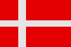

|
Länderinformationen Dänemark
1. Das Wichtigste auf einen Blick2. Sehens- und Hörenswertes
3. Politik & Gesellschaft
4. Schmeckenswertes
5. Medien
6. Reisetipps
1. Wissenswertes
|  | Hier
haben wir die wichtigsten Zahlen und Fakten zu Dänemark
und der dänischen Sprache zusammengetragen. |
Wir freuen uns, dass Sie sich für einen Dänischkurs von Sprachenlernen24 entschieden haben. Um Ihnen die Reisevorbereitungen zu erleichtern und Ihnen einen kleinen Vorgeschmack dessen zu geben, was Sie im Königreich Dänemark (Kongeriget Danmark) erwarten wird, haben wir für Sie hier Wissenswertes, Wichtiges, Kurioses, Interessantes, Kulinarisches und noch viele Informationen mehr rund um Dänemark, seine Sprache und die Menschen dort zusammengetragen.
Auf die Frage Snakker du dansk? – Sprichst du Dänisch? werden Ihnen insgesamt knapp fünf Millionen Menschen mit „Ja!! – Ja!“ antworten. Die große Mehrheit der Sprecher des Dänischen (dansk) lebt in Dänemark.
 Die
dänische Sprache
Die
dänische Sprache
Dänisch ist die Amtssprache von circa fünf Millionen Menschen in Dänemark und wird auch in Grönland und auf den Färöern gesprochen. Ferner wird Dänisch auf Island als Pflichtsprache in der Schule unterrichtet. Auf Grönland wird aber neben Dänisch auch Kalaallisut (Grönländisch) gesprochen. Auch die Färinger haben neben Dänisch eine eigene Sprache, das Färöisch. In Schleswig-Holstein ist Dänisch als Minderheitssprache geschützt.
Dänisch zählt man zur Sprachfamilie der indogermanischen Sprachen. Jetzt werden Sie (und das zurecht) zwei Fragen stellen: 1. Was ist eine Sprachfamilie? und 2. Was kennzeichnet die Familie der indogermanischen Sprachen?
Nun, um die erste Frage zu beantworten: Unter Sprachfamilien versteht man Gruppen von Sprachen, die miteinander (mit großer bzw. größter Wahrscheinlichkeit) verwandt sind. Die Untersuchung der Sprachfamilien begann man Ende des 18. Jahrhunderts. Zu dieser Zeit beschäftigte die Sprachforscher die Frage, ob es nicht eine gemeinsame Ur-Sprache der Menschheit gegeben habe. Und so hat man begonnen, Sprachen zu untersuchen und auf gemeinsame historische Ur-Sprachen zurückzuführen. Als Beispiel dürfte Ihnen die Gruppe der romanischen Sprachen bekannt sein. Als gemeinsame „Elternsprache“ dieser Gruppe hat man Latein identifiziert. Aus dieser Sprache entwickelten sich die „Tochtersprachen“ Französisch, Spanisch, Italienisch, Portugiesisch und Rumänisch - um nur die größten unter ihnen zu nennen.
Die Familie der indogermanischen Sprachen ist weit verzweigt und in viele Unterzweige aufgeteilt. Eine dieser Aufspaltungen ist der Zweig der nordgermanischen Sprachen. Andere indoeuropäische Sprachzweige sind unter anderem der westgermanische (zum Beispiel Deutsch und Englisch), der slawische (zum Beispiel Russisch und Polnisch) und der baltische Sprachzweig (zum Beispiel Lettisch).
Nun aber wieder zurück zu den nordgermanischen bzw. skandinavischen Sprachen: Zu dieser Familie rechnet man das Dänische, das Färöische, das Isländische, das Norwegische und das Schwedische. Es ist wissenschaftlich erwiesen, dass der Erwerb einer neuen Sprache leichter fällt, wenn die neue Sprache innerhalb der gleichen Sprachfamilie liegt. Also, wenn Sie jetzt bald sattelfest im Dänischen sind, warum lernen Sie nicht gleich weiter mit Schwedisch , Norwegisch oder Isländisch? Die Ursprünge dieser Verwandtschaft gehen zurück auf das siebte Jahrhundert n. Chr. Zu dieser Zeit brechen in Dänemark die Wikinger auf, um neues Terrain zu besiedeln und ihre Handelswege auszubauen. Auf ihren Fahrten gelangen sie nach England, nach Irland, nach Grönland und auch nach Island. In Island finden sie eine unbesiedelte Insel, die sie kolonialisieren. Das Isländische hat seine Wurzeln also in der Sprache der dänischen Wikinger.
Die skandinavischen Sprachen stimmen oft in bis zu 80 Prozent ihres Wortschatzes miteinander überein. Auch wird das norwegische Bokmål zum Beispiel oft als Dialekt des Dänischen bezeichnet: So groß sind die Übereinstimmungen der beiden Sprachen. Im Lauf der Jahre wurde Dänisch auch von anderen indogermanischen Sprachen beeinflusst und deswegen können Sie wahrscheinlich schon einiges verstehen, wenn sie jetzt mit der dänischen Sprache konfrontiert werden.
Im Dänischen wird das lateinische Alphabet verwendet – somit werden Sie beim Erlernen der dänischen Sprache etwas entlastet. Sogar die Reihenfolge der Buchstaben im Alphabet ist die gleiche wie im Deutschen, allerdings mit zusätzlichen drei Sonderzeichen am Ende: Æ/æ, Ø/ø und Å/å. Bestimmt sind Sie jetzt nicht sicher, wie man diese drei Buchstaben aussprechen soll. Hier finden Sie eine kleine Hilfe:
Buchstabe |
Aussprache |
Beispiele |
Æ/æ |
wie ein deutsches
ä |
Hjælp! (dt.
Hilfe!), forældre (dt. Eltern) |
Ø/ø |
wie ein deutsches
ö |
Østrig
(dt. Österreich), højre (rechts) |
Å/å |
gesprochen als
[ɔ] |
år (dt.
Jahr), Århus
|
Dialekte
in Dänemark
Die dänische Standardsprache heißt Rigdansk (dt. Reichsdänisch) oder Radio Københavnsk (dt. Radio Kopenhagisch). Diese Hochsprache basiert - sprachgeschichtlich betrachtet - auf den Dialektvarianten, die auf Seeland und in Schonen gesprochen wurden. Obwohl Dänemark ein relativ kleines Land ist, werden dort mehrere Dialekte gesprochen und fast jede Insel hat ihre eigene Variante. Die Dialekte können teilweise sehr stark voneinander abweichen und sind für Nicht-Muttersprachler oft schwer zu verstehen. Die drei Dialekthauptgruppen sind: Østdansk (dt. östliches Dänisch), Ødansk (dt. Insel-Dänisch) und Jysk (dt. Jutländisch). In den letzten Jahren aber hat die Bedeutung der Dialekte abgenommen und die Standardsprache hat sich immer mehr durchgesetzt.
 Einwohner
Einwohner
Auf dem eigentlichen Staatsgebiet Dänemarks leben circa fünf Millionen Einwohner. Davon haben sich alleine 1,2 Millionen in der Hauptstadt Kopenhagen angesiedelt. Ethnisch gesehen ist die Bevölkerungsstruktur Dänemarks sehr homogen: circa 96 Prozent der Bevölkerung sind Dänen. Etwa vier Prozent der Bevölkerung gehören kleinen türkischen, jugoslawischen, englischen oder skandinavischen Minderheiten an.
Außerdem gibt es in Südjütland Gemeinden mit einer großen Anzahl von deutschsprachigen Bewohnern.
Auf Grönland wohnen rund 56.000 Menschen. Davon haben etwa drei Viertel Vorfahren aus den Stämmen der Inuit oder sind Inuit. Auf den Färöern wohnen etwa 48.000 Menschen.
Die durchschnittliche Lebenserwartung in Dänemark liegt bei Männern bei 73 Jahren und bei Frauen bei 78 Jahren.
Die meisten Dänen sprechen neben Dänisch noch Fremdsprachen wie Englisch, Spanisch, Deutsch oder Französisch.
 Fläche
Fläche
Das
kleinste und südlichste Land Skandinaviens setzt sich zusammen
aus der großen Halbinsel Jütland und über 470 Inseln
unterschiedlicher Größe. Im Süden grenzt Dänemark
an Deutschland. Diese Grenze ist die einzige Grenze zu Lande,
ansonsten ist das Land von allen Seiten vom Meer umgeben.
Zu Dänemark gehören auch zwei autonome Gebiete im Nordatlantik – Grönland und die Färöer. Ohne diese autonomen Gebiete umfasst Dänemark eine Fläche von 43.094 km und ist damit etwas größer als die Niederlande. Die größten Inseln sind Seeland, Fünen, Bornholm, Lolland und Langeland.
Die Bewohner Dänemarks konzentrieren sich sehr stark in den Städten : 86 Prozent der Einwohner wohnen in den Städten, ein Viertel davon in Kopenhagen und seinen Vororten. Andere wichtige Städte sind Århus (285 000 Einwohner), Odense (184.000) und Aalborg (192.353).
 Währung
Währung
Die offizielle Währung in Dänemark (auch in Grönland und auf den Färöern) ist die Dänische Krone (Abk. DKK). Ein Krone wird unterteilt in 100 Øre und die kleinste im Umlauf befindliche Münze ist das 25 Øre -Stück. Ein Euro entspricht aktuell etwa 7,5 Dänischen Kronen. Eine Besonderheit bei den 1-, 2- und 5-Kronen-Münzen ist, dass sie ein Loch in der Mitte haben.
2002 wurde in vielen EU-Ländern der Euro eingeführt, aber die Dänen entschieden sich in einer Volksabstimmung gegen die Euro-Einführung. Fremdwährungen können in Banken und Wechselstuben problemlos gewechselt werden.
 Wirtschaft
Wirtschaft
Genauso wie Deutschland, Österreich und die Schweiz, ist Dänemark eine moderne und weit entwickelte Volkswirtschaft. Das Land hat eines der höchsten Pro-Kopf-Einkommen der Welt und der Lebensstandard der Bevölkerung ist sehr hoch.
Traditionell ist in Dänemark die Landwirtschaft immer sehr wichtig gewesen, und auch heutzutage spielt sie noch eine große Rolle für die Wirtschaft. Mehr als die Hälfte der Landesfläche wird agrarisch genutzt. Nach dem 2. Weltkrieg hat der Dienstleistungssektor jedoch immer mehr an Bedeutung gewonnen und ist inzwischen der wichtigste Wirtschaftszweig geworden.
Seit den letzten Jahren boomt der Tourismus in Dänemark. Jedes Jahr wird das Land von über zwei Millionen Touristen besucht. Die meisten Touristen reisen aus den skandinavischen Ländern und aus Deutschland an. Beliebte Urlaubsziele sind Kopenhagen und die Insel Bornholm. Die Einnahmen aus dem Tourismus betragen jährlich etwa 2,3 Milliarden Euro.
 Zeitzone
Zeitzone
Dänemark liegt innerhalb der selben Zeitzone wie Deutschland, Österreich oder die Schweiz. In Dänemark findet ebenfalls eine Umstellung auf die Sommerzeit statt.
Nach diesem Kapitel über Sprache und Land möchten wir Sie im nächsten Abschnitt einladen zu einer kleinen Reise durch Dänemark. Dort haben wir einige ausgesuchte Reiseziele versammelt und stellen Ihnen Sehens- und Hörenswertes vor.